TURRET WEAPON SELECTION
As you pick up additional weapons pressing left or right on the directional
button you can highlight (select) the weapon you want to use. If at any time
the currently selected turret weapon is exhausted; the turret will default
back to the Standard Shell. Listed below are the eight turret weapons, and
their desciptions.
|
| 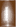 |
 |
STANDARD SHELL
This is your basic weapon, you have an unlimited amount of ammunition.
|
| 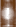 |
|
BOUNCER
Bounces along the terrain after contact.
|
| 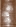 |
|
SPRINKLER
Fires many times in rapid succession. Turning the turret while firing
results in a sprinkler effect.
|
| 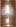 |
|
DRIFTER
Splits up into nasty fragments if fired over someone's head. Useful at
medium to long range, especially at static targets.
|
| 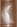 |
|
SNIFFER
A simple homing missile (can be evaded with skill).
|
| 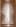 |
|
BIG BANG
A powerful ballistic shell.
|
| 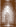 |
|
MAGNATRON
Is magnetically attractive to just about everything (fire it over people's
heads to pull them off balance or over cliff edges).
|
| 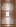 |
|
TELEPORTER
If it hits someone (something?) you swap places. |
FIRING THE MINE WEAPON
When you have a mine weapon selected, simply press the X button to drop it.
Pressing up or down on the directional button will allow you to toggle
through your mine weapons.
|
MINE WEAPON SELECTION
Pressing Up or Down on the directional button selects which mine weapon you
have activated. Listed below are all four mine weapons, their Infobar icon,
and a brief description of what can be expected upon release.
|
| 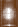 |
|
ROLLER
A barrel-like mine which rolls over ground.
|
| 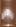 |
|
MAGNETIC
Magnetically attracts nearby objects.
|
| 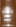 |
|
JUMPING JACK
If an object gets within range, these will jump towards them and
explode on impact - make sure you are not the target.
|
| 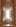 |
|
BEACON
Allows you to "mark" parts of the terrain to assist with navigation, and, in
a multiplayer game, communication. You can pick them up and reuse them.
|